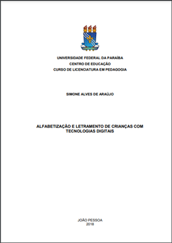
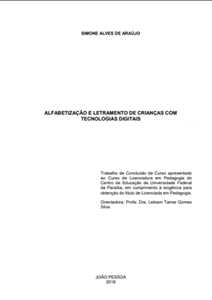
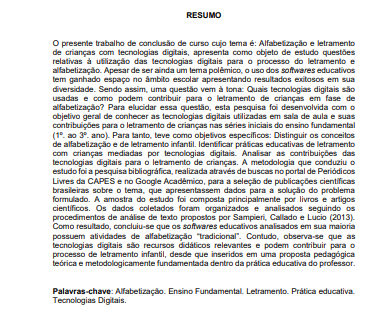
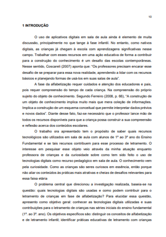
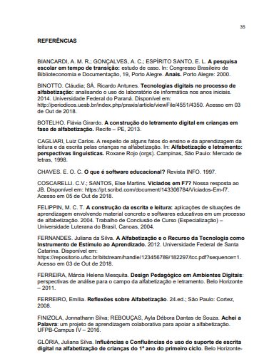

Para fazermos o roteiro do nosso tcc temos que lembrar os elementos que
constituem um tcc, são eles:
- Capa: onde deve ser inserido o título do projeto de pesquisa , depois o seu nome e por fim data. Exemplo:

- Folha de rosto: É parecido com a capa, entretanto contém mais informações sendo elas, o título da pesquisa, seu nome, nome e o curso da instituição, nome do seu orientador e por último a data. Exemplo:

- Resumo do trabalho: Em seu resumo do trabalho coloque apenas uma visão compacta da pesquisa, destacando o problema, os objetivos, o público alvo e também resultados esperados. Como este é um roteiro apenas devemos simplesmente dar uma idea geral do que se espera para esse trabalho.Exemplo:

- Introdução: Na introdução devemos apresentar o tema de nossa pesquisa e explicar a relevância do tema em si. Exemplo:

- Objetivos: Nessa seção devemos descrever os objetivos da pesquisa, ou seja, o que pretendemos solucionar com esse trabalho.
Exemplo: Esse projeto tem por objetivo descobrir metodologias para letramentro e alfabetização de crianças a partir de quatro anos , auxiliando os pais e mestres nesse processo.
- Resultados esperados: Como estamos fazendo um roteiro, aqui devemos colocar uma prévia dos resultados esperados para essa pesquisa.
- Bibliografia inicial: Nessa seção colocaremos uma lista preliminar de livros, artigos científicos e outras pesquisas relacionadas com o tema.
Exemplo:
